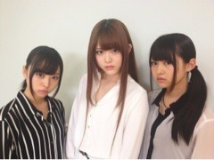

| 2013/04 06 Sat | 401回目*marika |
「アオーレ一周年誕生祭」
今日は新潟におじゃましました！
公開生放送はみさ、ひめかと一緒に。
そしてライブ。
♪制服のマネキン→生駒
♪会いたかったかもしれない→みなみ
♪涙がまだ悲しみだった頃→ゆきな
♪13日の金曜日
♪君の名は希望→なあちゃん
♪おいでシャンプー→かなりん
それぞれいろんなポジションに
立たせていただきました。
みさ、ひめか、私中心にMCをしたり
重要なところを担うことになって
不安でしたが、
みんなのフォローがあったら
なんとか上手くいきました

新潟のみなさんに少しでも
乃木坂46を知ってもらえたかな。
少しでも乃木坂46に
興味を持ってもらえたら嬉しいです。
ライブ後も公開生放送に16人で
出演しましたー！
桜餅美味だったああああ
時間なくて半分しか
食べられなかったけど泣
トラブルがあって
おまたせしてしまい、
申し訳なかったです。
でも楽しかったっっっ

全力で歌って踊って汗かきまくった。
ライブだいすきだあ。
Negiccoさん、でんぱ組.incさん
ありがとうございました！
新潟のみなさん
来てくださった乃木坂famのみなさん
ありがとうございました！
またアオーレで会おうれ
 ♪ふふ
♪ふふ
♪ふふ
撮影:中元日芽香
.........
前回の記事にたくさんのコメントが！
お祝いしてくれてありがとう

手書きメッセージ喜んでくれた
みたいでよかった
 はは
はは
はは
気合入れたらもっと上手く書けるけど
ゆるいのもありでしょ？
字や絵もほめてくれて嬉しいーふふん
.........
ついに...
「BAD BOYS J」第一話 放送！
4月6日（土）25時20分～25時50分
日本テレビ（関東ローカル）
挿入歌は乃木坂46
♪世界で一番 孤独なLover
嬉しい

公式サイトも新しくなって
人物相関図のところに自分がいる。
変な感じ！でも嬉しい

自分はナイツレディース
三上実由役です。
美奈 美香 実由

本当に絶対見てください！
明日の名古屋全握楽しもう

さゆにゃんまりっかレーンしかっ←
まりか
コメント(371)
2013/04/06 21:00